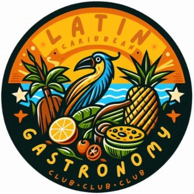

Gastronomy Latin & Caribbean Club
Welcome to the Gastronomy & Latin Caribbean Club! We’re a community of food lovers and culture enthusiasts who come together to celebrate the rich flavors, traditions, and history of Latin Caribbean cuisine. From hands-on cooking experiences to cultural events and food tastings, we explore the vibrant culinary heritage that connects us all. Join us to share recipes, learn new techniques, and savor the delicious essence of Latin Caribbean gastronomy!
The Gastronomy & Latin Caribbean Club is dedicated to celebrating the rich culinary and cultural traditions of Latin America and the Caribbean. Through food, music, and storytelling, we explore the flavors and histories that make our cultures unique. Our club is a space where students can immerse themselves in authentic experiences that go beyond the plate, learning the significance of each dish and its connection to our roots.
We believe that food has the power to bring people together, creating bonds that transcend borders and backgrounds. Our club welcomes everyone—whether you grew up with these traditions or are discovering them for the first time. By sharing meals, traditions, and stories, we foster a sense of unity and appreciation for diversity within our campus community.
Beyond cooking and tasting, we aim to educate and inspire. Through workshops, guest speakers, and cultural events, we highlight the artistry and history behind Latin Caribbean cuisine. Our mission is to create a welcoming space where curiosity is encouraged, traditions are honored, and new connections are made over a shared love for food and culture.